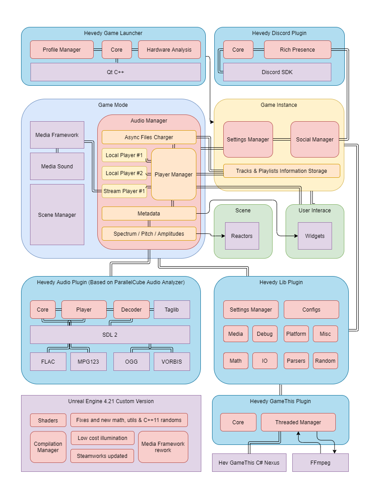

Introduction
Visyer is a music player supporting stream radios and local files on fly, with direct real-time 3D visualization of spectrum, beats and amplitude, plus vibrations outout to devices like gamepads.
The whole application where developed alone by David "Hevedy" Palacios.
Features
Real-time 3D visualizer & vibrations output to gamepads
Stream radios player
Individual and playlist player
Extended supported formats .mp3, .wav, .ogg, .flac
Different scenes with different reactors
User control of per Hz visualizers
Low cost custom illumination changes
Files reader and loader variable at runtime
Custom settings manager
The Complextro Structure

{kind=link}
*Note only the main structure is listed in the image listed here.
{kind=link}
{kind=link}
The Nightmares
The whole structure was redesigned a couple of times on the alpha state to support new features such as the multi music players managed at time or a gameplay mode, and spend 4 months in the base game and more than 1 year making the different changes and libraries.
Used Unreal Engine 4.21 as was my favourite tool of choice to develop this as wanted from start a live 3D visualizer, in other cases I used Qt tools but I wanted to go further in this.
The game have 3 different editions and is posted in different stores, this means each edition have different needs and each platform too and make all the changes manually is time consuming and proven human fail, so had to develop a C# .Net Core 2 app in order to auto manage all the builds, made too a system to make local backups of the whole project split into code and art.
There was no *the key tool to rule them all* so I had to make mine, Unreal Engine 4 is an awesome set of tools overall but the audio side isn't as good as I needed so totally ignored the built in audio system and is just used for effects or noticiation, only used the UE4 Media Framework for stream the radio, and found a problem there was no spectrum measure systems or alike working on my build, so had to port part from last versions to this custom version plus add some custom changes to it.
The main music player in other hand for local music uses the awesome Audio Analyzer plugin by Parallelcube, this allows me to have a complete support for .mp3, .wav, .ogg and .flac. but not everything is that easy isn't?
After create a custom reader for my files noticed the loader wasn't that fast, so reworked this system and added an async loader, what this means ? First that the files can load without affect the main thread of the game in a second plane, as second part this means need to create a whole structure that isn't linear in code while allow the player to play their music and manager 3 music players at time. (Yeah was it hard as it sound).
{kind=link}
Once this system were created it worked fine but there was another problem, the user will need to close the game in order to reload the tracks and playlists... Solution? rework the whole loader another time, this time just read the playlists and store them into structs where store all the paths, these are procesed and verified as valid files, the files are invalud then the playlist isn't created or the track isn't loaded but last one instead.
At this point and 3 months later had the whole system made but the load times for 5 tracks were too high like a whole 2 seconds per track to read metadata and verifique it, solution?... make a new parser, edited the audio plugin and added a new library support called Taglib and now the load times are in some point x50 times faster than what used to be, basically 50 tracks can load in couple seconds or less. (Ship this)
So whats the 3º audio player for? This one basically get spectrum and other values before it plays, so allows me to get the next notes and predict actions for the game, after all this there was the last issue to solve; the stream audio and the local audio outout different spectrums and aren't feature equal, so had to do a manager inside the exiting manager to get per type values and join it inside the same system.
But wait there is more... the file browser per OS native included inside Unreal Engine 4 is illegal to be shipped or used by EULA on a final product, as is part of development tools, and had to use an external library and use a plugin TinyFileDialogs using the plugin of Doublezer0 as base branch, but turns out it don't work well in fullscreens and won't work in other platforms outside of Desktop, so the solution was to build a custom one inside UMG using custom IO function in order to detect things like installed Hard drives.
{kind=link}
I wanted the system to showcase your friends what are you listening and allow to interact with them thats why wanted to integrate Discord, but seems like my old plugin was deprecated due a complete api rework so I had to create a new Hevedy plugin for Discord as there was no public solutions now your music and other content is displayed inside if you choose to do it, and in Steam implemented the Remote Play system that allows you to play your music with friends online in party.
Final Notes
With this article I wanted to show you my whole experience and the pasion set developing this whole tool alone, because isn't just a visualizer is a complete application, special thanks to all the people that supports me everyday!.
If you found it interesting consider try the free version of Visyer Starter Edition and if you like it support me purchaing the tools or just telling others about it.
I wish this application help different people doing their common tasks a bit more wonderful, and support the music artists directly from their sites or stores that actually support them.
Special thanks to the music creators Zero Project & Creo for their tracks, and thank you for take your time to read the article!
This article aswell the images are under the license Creative Commons Attribution-ShareAlike 4.0 International License (CC BY-SA 4.0) made by Hevedy. Feel free to use this concept while you give credit to the original author Hevedy.